Building beyond the classroom.
I'm an undergraduate student at North Carolina A&T State University pursuing Computer Engineering. My interests include computer hardware, embedded systems, programming, electronics, and the intersection between hardware and software. Through internships, engineering programs, and personal projects, I've been able to gain hands-on technical experience before and during college.
Where I've worked & learned.
Barton College — Information Technology Department
Supported technology operations across the Barton College campus, including computer and printer troubleshooting, audiovisual systems, classroom technology, equipment setup, and technical support for faculty and staff.
SEED Academy
Participated in hands-on engineering experiences involving electrical systems, automation equipment, pneumatics, circuit training systems, 3D printing, troubleshooting, and collaborative design challenges.
TRIO Upward Bound
Participated in college-readiness, academic enrichment, leadership, and professional development activities designed to prepare students for success in higher education.
“Clinton quickly adapted to all of these areas, demonstrating not only technical proficiency but also a strong willingness to learn and contribute meaningfully from day one.”
Things I've worked on.
Engineering Systems
Hands-on experience working with electrical, pneumatic, automation, and training systems through SEED Academy.
EngineeringElectronics3D Modeling & Printing
Experience creating digital 3D models and seeing designs move from a virtual environment into physical prototypes.
3D Design3D PrintingCustom PC Hardware
Experience with PC component selection, computer assembly, hardware configuration, upgrades, and troubleshooting.
PC HardwareTroubleshootingC++ Programming
Developing foundational programming and problem-solving skills using C++ while pursuing Computer Engineering.
C++ProgrammingExperience, in frame.
A visual look at the engineering programs, technical work, college-readiness experiences, and personal hardware projects that have shaped my path into Computer Engineering.
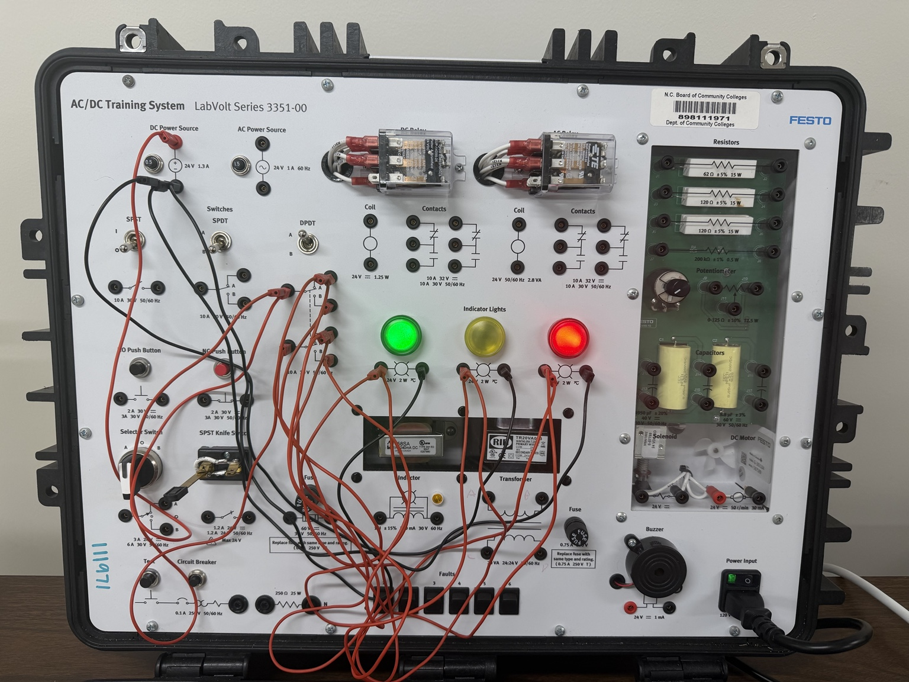
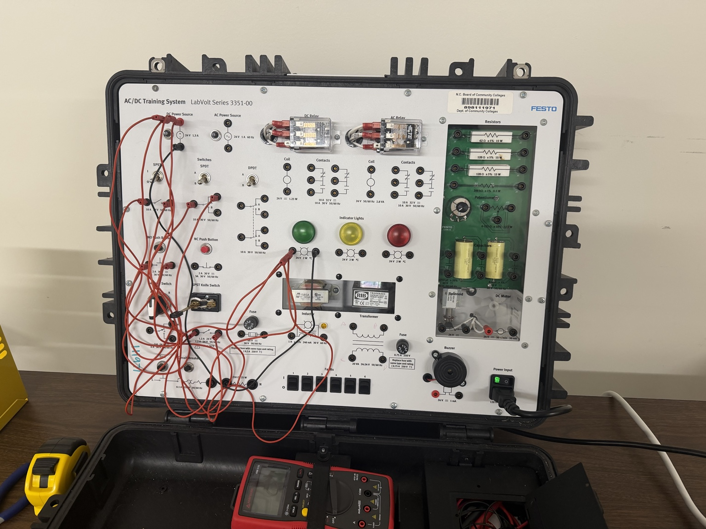
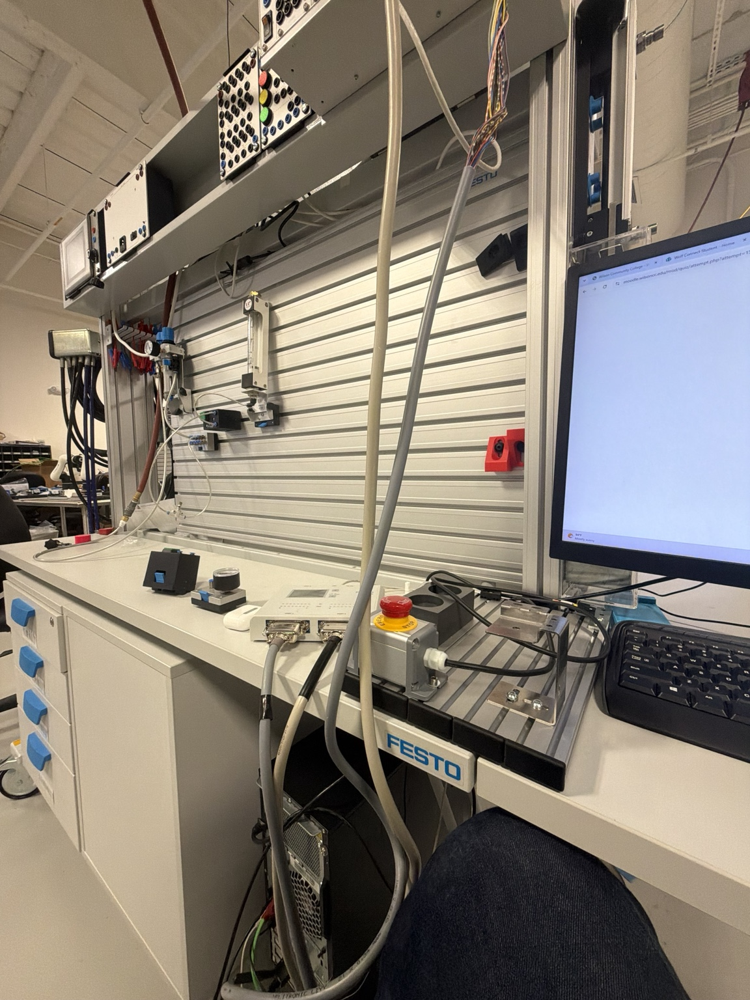
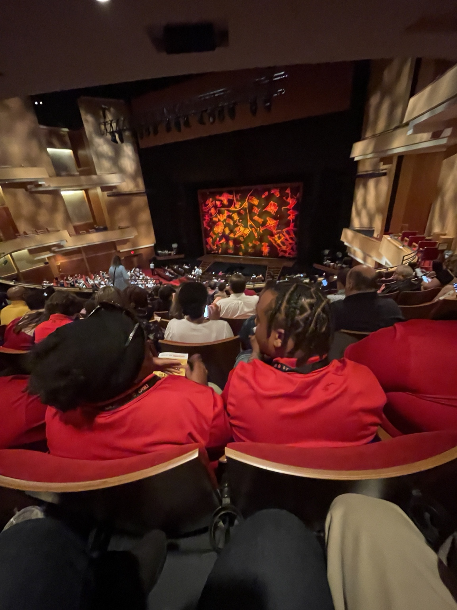
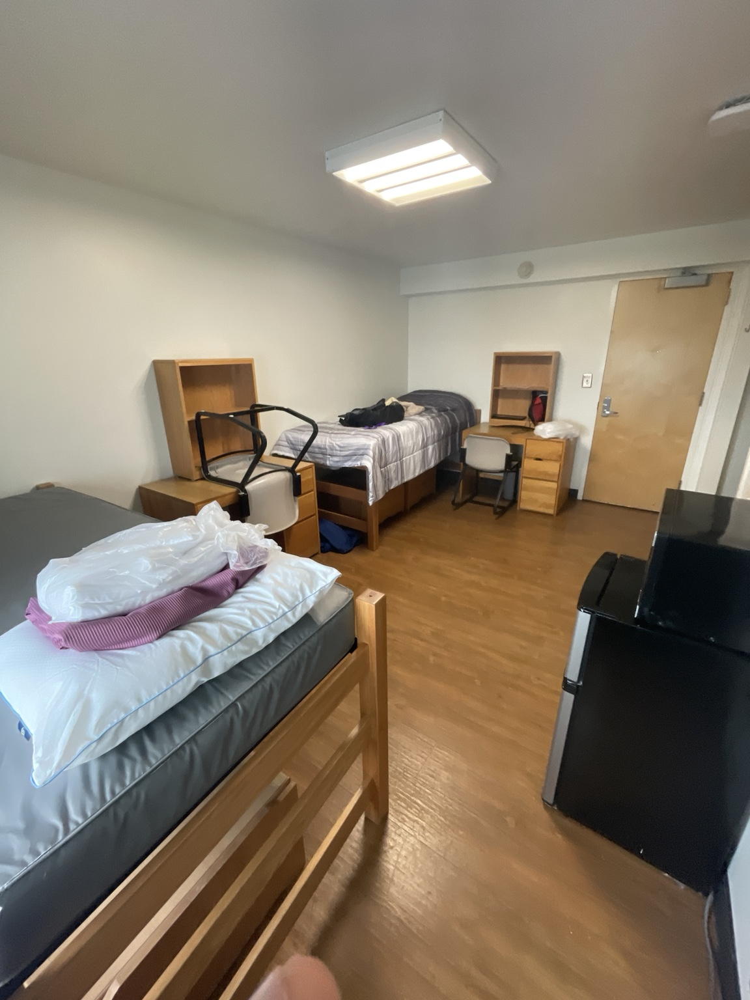
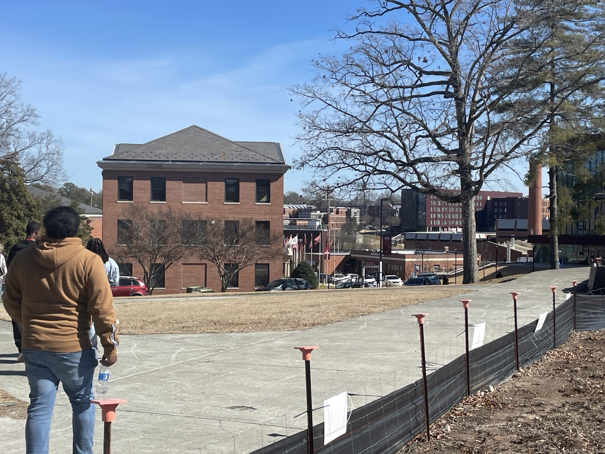
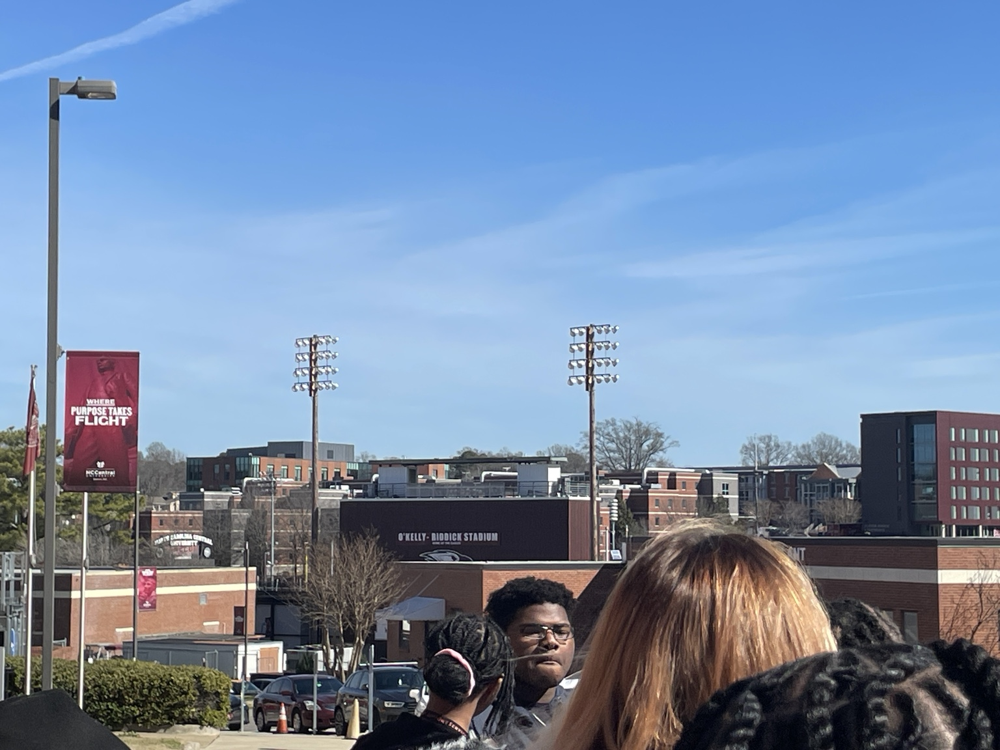
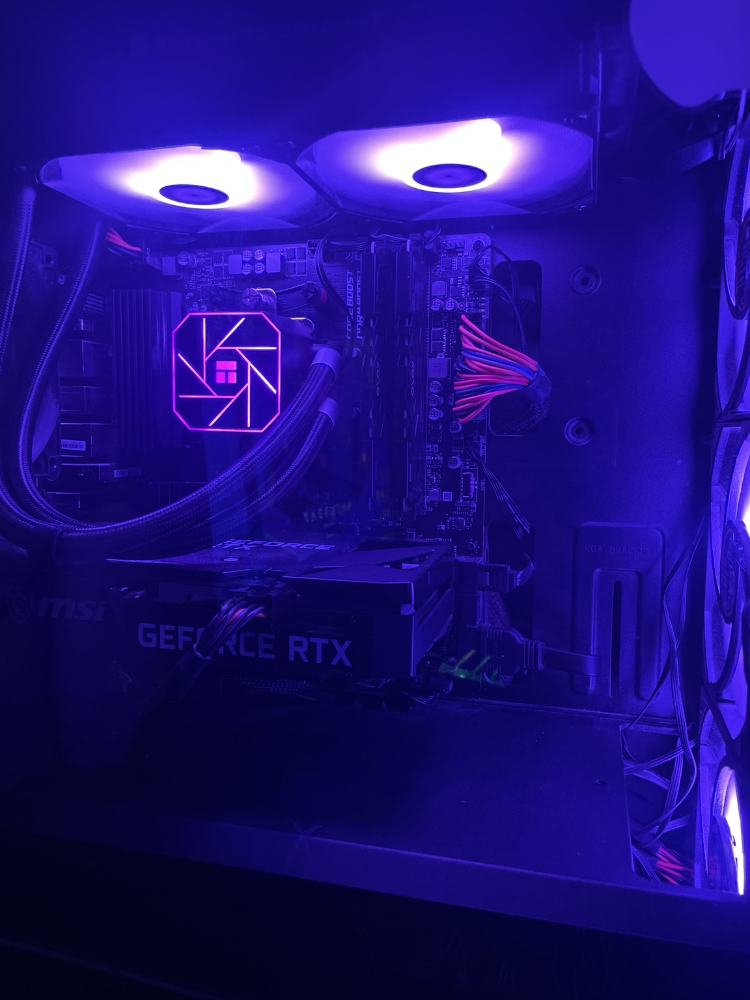
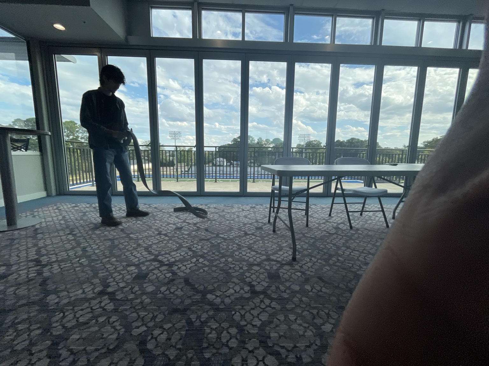
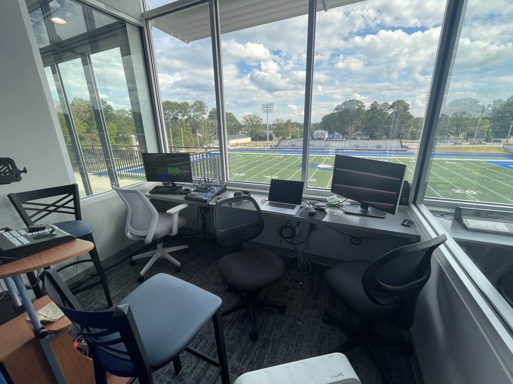
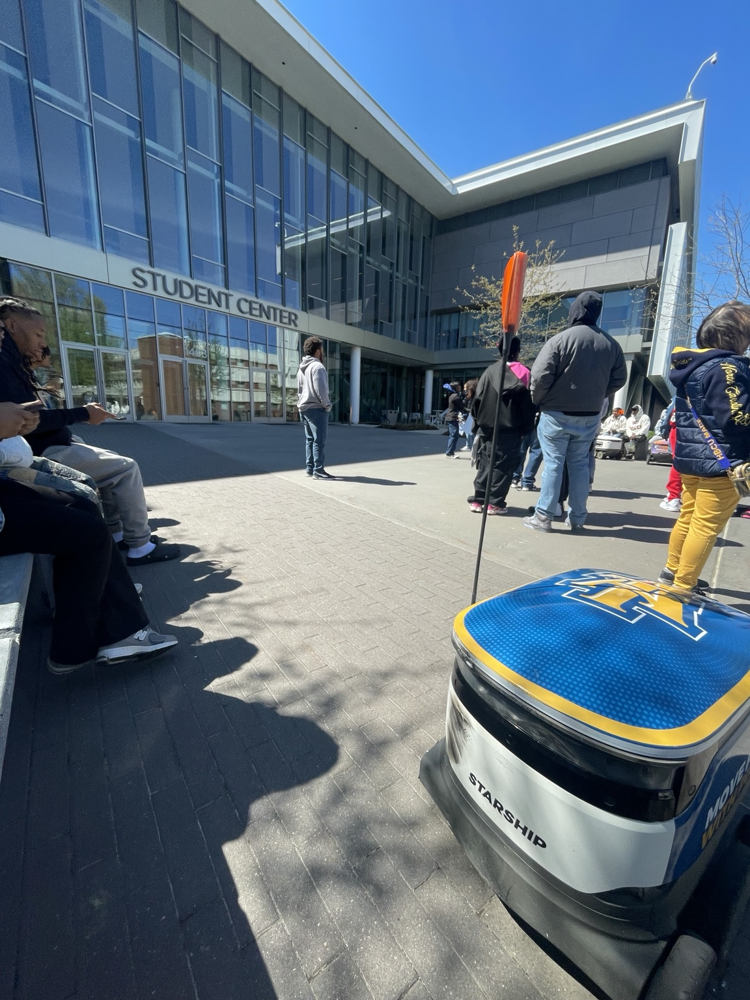
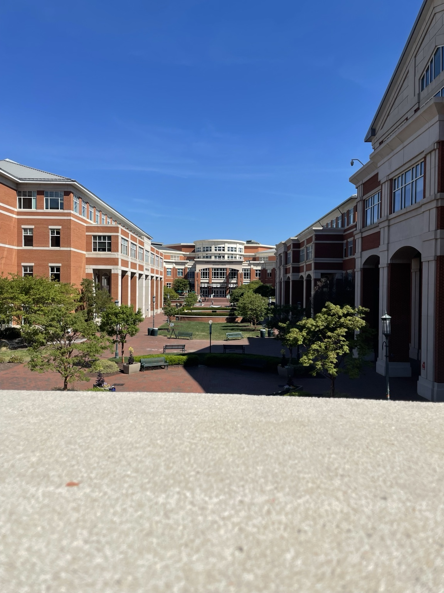
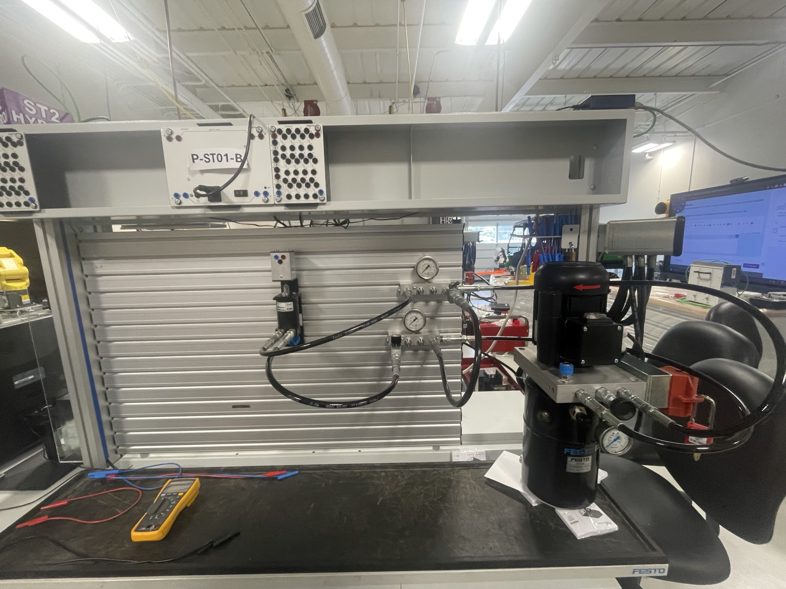
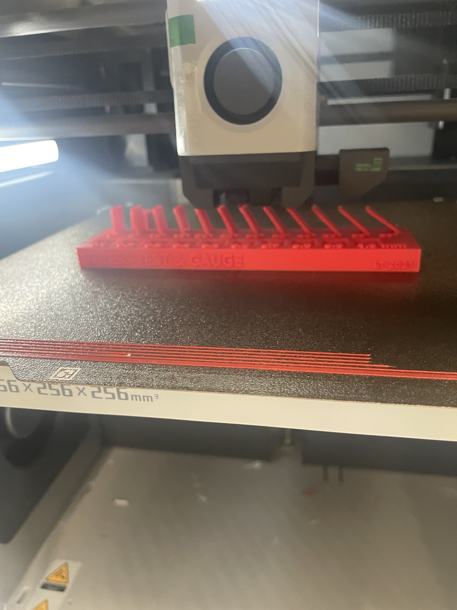
Let's connect.
I'm currently building my experience in computer engineering, information technology, and hardware-focused projects.
Email Me